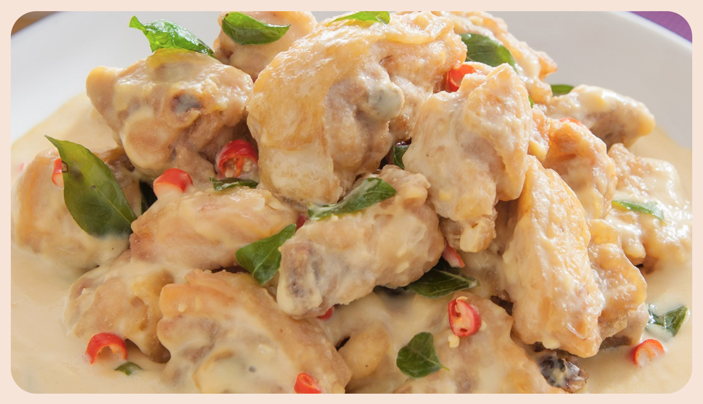

Buttermilk Chicken

Description
Resepi Ayam Buttermilk yang sungguh sedap dan anak-anak pasti suka. Cara nak buat pun agak mudah dan tidak memerlukan banyak bahan yang rumit. Sesuai jika digunakan ayam bahagian dada atau isi, tetapi boleh juga nak gunakan bahagian tulang yang lain.
Ayam perlu digoreng dulu bersama salutan tepung kemudian dimasukkan ke dalam kuah buttermilk. Rasanya, lemak, manis masin secukup rasa dan haruman dari daun kari sangat memikat selerea.
Ingredients
- 2 ketul besar ayam, bahagian dada
- 1/2 tin susu cair
- 3 ulas bawang putih, hiris halus
- 1/2 biji bawang besar holland atau bawang besar biasa, potong dadu
- 4 sudu besar mentega
- 2 tangkai daun kari
- 4 biji cili padi
- Bahan-bahan untuk tepung salutan ayam:
- 2-3 sudu besar tepung gandum
- 1 sudu besar serbuk kari
- 1 biji telur
- Sedikit garam
- Air secukupnya
Steps
- Potong dadu isi ayam, bersihkan dan toskan airnya.
- Masukkan telur dan garam ke atas ayam dan gaulkan sebati.
- Masukkan tepung, serbuk kari dan sedikit air. Kacau supaya tepung pekat dan menyaluti ayam. Perap selama 30 minit atau lebih.
- Goreng ayam di dalam minyak panas sehingga garing. Angkat dan ketepikan.
- Cara-cara untuk ayam buttermilk:
- Dalam kuali, panaskan butter sehingga cair dan tumis bawang putih, cili dan daun kari sehingga naik bau.
- Masukkan susu cair dan bawang besar. Kemudian masukkan ayam yang digoreng tadi.
- Masak sehingga kuah sedikit pekat. Perasakan dengan garam dan gula secukupnya.